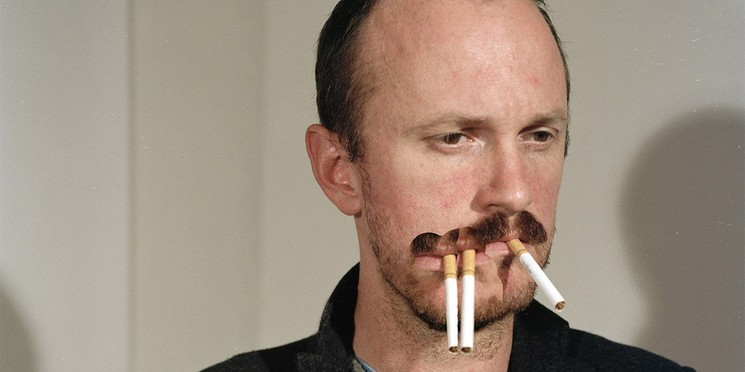
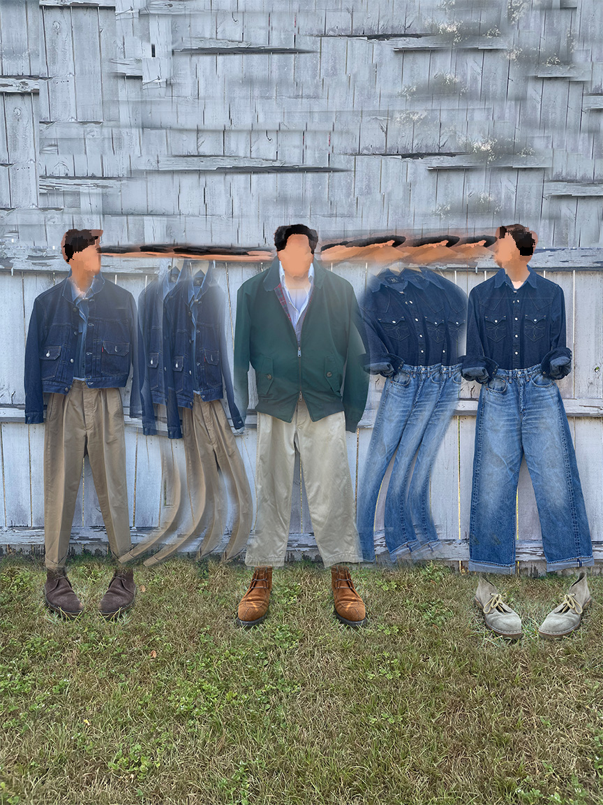
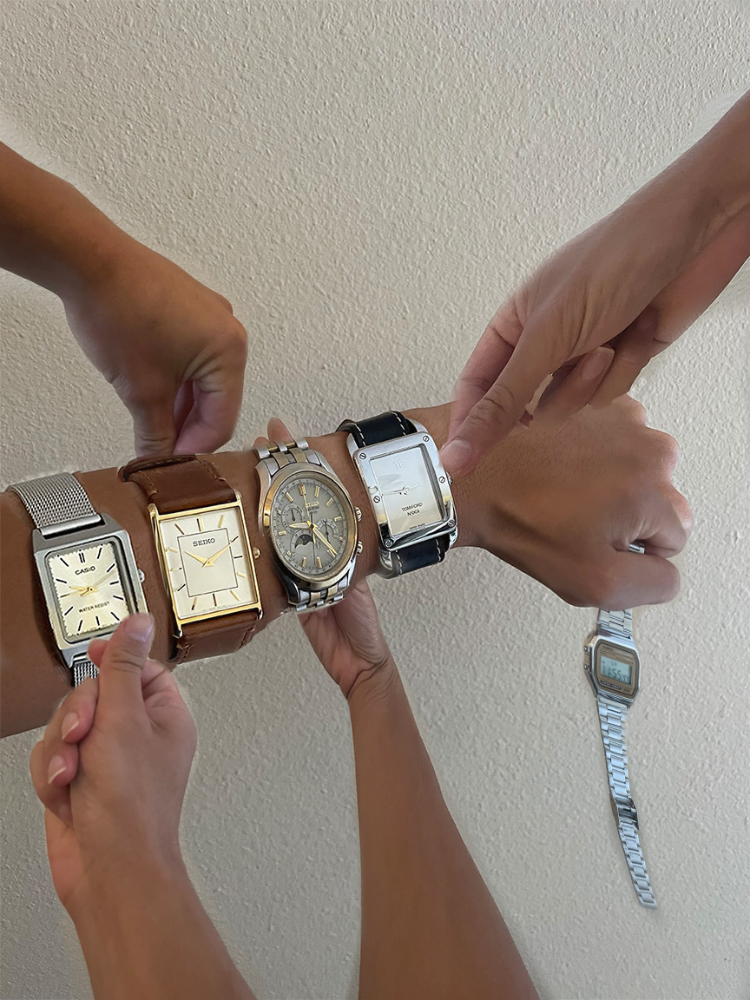
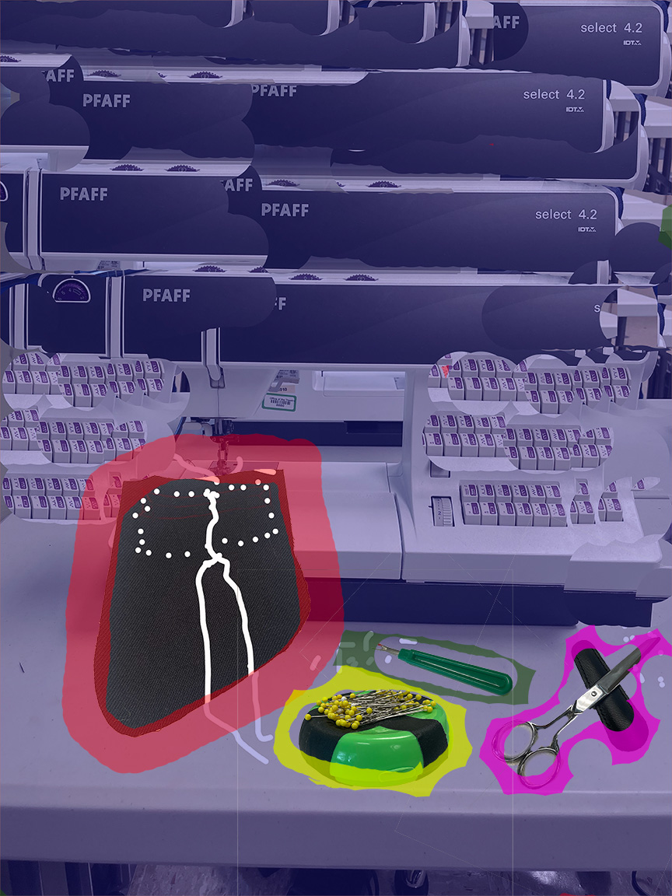

<!DOCTYPE html>
<html lang="en">
    <head>
        <meta charset="UTF-8" />
        <title>Title</title>
    </head>
    <body style="background-color: #275506"></body>
</html>

<html lang="en">
<head>
  <meta charset="UTF-8">
  <meta name="viewport" content="width=device-width, initial-scale=1.0">
  <title>My Portfolio</title>
  <style>
    body {
      font-family: Arial, sans-serif;
      margin: 0;
      line-height: 1.6;
    }
    header {
      background: #275506;
      color: darkgoldenrod;
      padding: 1rem;
      text-align: center;
    }
    nav {
      background: #8d6925;
      
    }
    nav ul {
      list-style: none;
      margin: 0;
      padding: 0;
      display: flex;
      flex-wrap: wrap;
      justify-content: center;
    }
    nav ul li {
      margin: 0.5rem;
    }
    nav ul li a {
      color: #47f214;
      text-decoration: none;
      padding: 0.5rem 1rem;
      background: #5c560f;
      border-radius: 4px;
      transition: background 0.3s;
    }
    nav ul li a:hover {
      background: #b2a60b;
    }
    main {
      padding: 2rem;
    }
    section {
      margin-bottom: 2rem;
    }
    footer {
      background: #275506;
      color: darkgoldenrod;
      text-align: center;
      padding: 1rem;
    }
  </style>
</head>
<body>
  <header>
    <h1 style="font-family: serif">Joshua's Portfolio</h1>
    <p style="font-family: serif;font-size: x-large">ART2602C Introduction to Digital Studio Online / Fall 2025</p>
  </header>

  <nav>
    <ul style="font-family: serif">
      <li><a href="final%20portfolio%20pixelated.html">Pixelated</a></li>
      <li><a href="final%20portfolio%20home.html">Home Page</a></li>
      <li><a href="final%20portfolio%20perfect%20mask.html">Perfect Mask</a></li>
      <li><a href="final%20portfolio%20gifs.html">Animated GIFs</a></li>
      <li><a href="final%20portfolio%20glitch%20grit.html">Glitch and Grit</a></li>
    </ul>
  </nav>

  <main style="background-color: rgb(227, 215, 192)">
    <section id="photoshop">
      <h2 style="text-align: center; color: darkgoldenrod;font-family: serif">Bad Photoshop</h2>
      <p style="color: darkgoldenrod; font-size: x-large;font-family: serif;text-align: center">
        The Bad Photoshop assignment had me
      make 3 intentionally "poor-looking, photoshop-ish" composite images based off the work of Lucas Blalock. 
        Perhaps the word bad isn't the best word
      to describe the artwork he does.. but it's clear that he makes it intentionally photoshopped. Here's a
      portrait of the man himself which is also an artwork...</p>
      
      <p style="color: darkgoldenrod; font-size: small;font-family: serif;text-align: center">
        (Not gonna lie, this portrait is one
      of the small triggers that started my smoking habit. I see that stuff everywhere you know? Like, every art
      video I've seen has at least one artist smoking. People I know and look up to in the menswear space smoke.
      Hell, there's even a series that I currently read where smoking is literally in the title and is 
        the main connection for the two main characters)</p>
      <p style="color: darkgoldenrod; font-size: x-large;font-family: serif;text-align: center">
        Anyways, here's my work for the assignment!</p>
      <h2 style="text-align: center; color: darkgoldenrod;font-family: serif">Composite Imagery</h2>
      
      
      
      <h2 style="text-align: center; color: darkgoldenrod;font-family: serif">Technical Notes</h2>
      <p style="color: darkgoldenrod; font-size: x-large;font-family: serif;text-align: center">
        All the imagery in this photo was 
      shot on my iPhone. Adobe Photoshop was used to alter all the images.</p>
       <h2 style="text-align: center; color: darkgoldenrod;font-family: serif">Process Documentation</h2>
      <p style="color: darkgoldenrod; font-size: x-large;font-family: serif;text-align: center">
        It was recommended to look at Lucas
      Blalock's artwork which is something I obviously did (see why in reflection). I was quite a fan of his
      cigarette portrait so I wanted to do something similar that. That want turned out to be the timepiece image in
      the middle of the three. Since he repeated cigarettes, I repeated watches. I think a big thing for me 
        was repeating imagery so I opted for that in the sense of the other two imagery albeit just a bit
      different. With the top one, it was more of a fading affect.
        With the bottom, definitely more a chaotic affect. The bottom definitely involved more "play" in the sense
      that there is a lot of color play</p>
       <h2 style="text-align: center; color: darkgoldenrod;font-family: serif">Reflection</h2>
      <p style="color: darkgoldenrod; font-size: x-large;font-family: serif;text-align: center">
        This assignment definitely pushed my usage
      of photoshop quite a bit. I don't recall going this far in my middle school Youtube thumbnails on Paint.NET.
      It was a struggle to use tools that I was unfamiliar with but I'd say that I successfully pulled through
      (at least at my skill level). Naturally, I'm always happy to include my hobbies into my artwork which is
      clear based on the outfits, time pieces, and sewing equipment seen. Definitely the biggest thing that I can
      take away from this project is the usage of layers. I just remember making a LOT of layers for each of these
      images. Masking as well. Layers and masking were a big take away. There were times I couldn't display something 
        properly or I would erase the wrong thing. This
      project gave me practice for that.</p>
      
    </section>

    

  </main>

  <footer>
    <p>&copy; 2025 Joshua's Portfolio</p>
  </footer>
</body>
</html>
